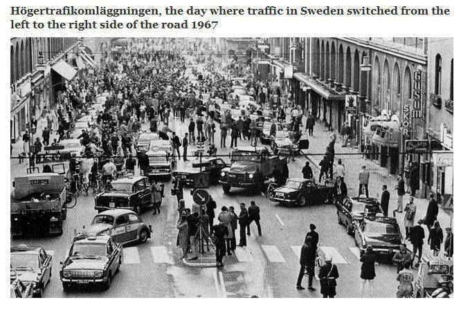
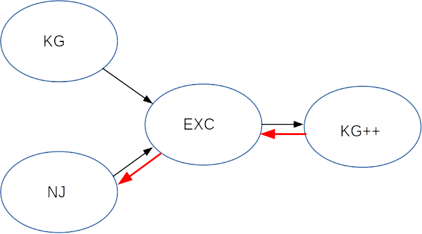

Merging The Swedish Code of Statutes (SFS)
XML Prague 2019
Ari Nordström | ari.nordstrom@gmail.com
Karnov Group Buys Norstedts juridik

Merging companies
- systems
- information
The Swedish Code of Statutes (Swedish: Svensk författningssamling; SFS) is the official law code of Sweden which contains the statutes and ordinances enacted and designated by the Government, including a publication of all new Swedish laws enacted by the Riksdag.
The Swedish Code of Statutes (SFS)

Annotated and published by both companies
SFS 1962:700
§ 1... |
KG Annotation NJ Annotation |
§ 2... |
KG Annotation NJ Annotation |
§ 3... |
KG Annotation NJ Annotation |
Common Online Platform

Printed Law Book

Approach

What You Need to Understand First

(Limited) Information Analysis
NJ Sources
KG sources
All 1960s Laws
(Lots of) eXist Queries
xquery version "3.1";
let $base := '/db/sfs/nj'
let $moment := {
for $doc in collection($base)//sfs[.//sfskapitel//moment]
return $doc
}
return {
$moment/node()
}
Rinse & Repeat:
The Exchange DTD Format
Tools
I'm a (Data) Pipelines Fan

Nic Gibson's XProc Tools
<xsl:template match="/">
<xsl:apply-templates select="node()" mode="SFS-EXC2KG_INLINE"/>
</xsl:template>
<xsl:template match="exc:ref" mode="SFS-EXC2KG_INLINE">
<kgp:ref>
<xsl:copy-of select="@* except @type"/>
<xsl:if test="@type">
<xsl:attribute name="target-type" select="@type"/>
</xsl:if>
<xsl:apply-templates select="node()" mode="SFS-EXC2KG_INLINE"/>
</kgp:ref>
</xsl:template>
<!-- ID transform -->
<xsl:template match="node()" mode="SFS-EXC2KG_INLINE">
<xsl:copy copy-namespaces="no">
<xsl:copy-of select="@*"/>
<xsl:apply-templates select="node()" mode="SFS-EXC2KG_INLINE"/>
</xsl:copy>
</xsl:template>
XSLT Pipeline Manifest
<!-- Converts main structures -->
<item
href="SFS-EXC2KG_structure.xsl"
description="Converts main EXC structures"/>
<!-- Chapter versions to meta -->
<item
href="SFS-EXC2KG_version2meta.xsl"
description="Converts EXC chapter version information to KG++ meta items"/>
<!-- Group title versions if there are two or more consecutive title groups -->
<item
href="SFS-EXC2KG_merge-title-versions.xsl"
description="Merges the versions of two or more consecutive title groups"/>
<!-- Front matter -->
<item
href="SFS-EXC2KG_front.xsl"
description="Converts front matter elements, except those that only need a namespace conversion"/>
Why It Helps
8.2M Jan 18 11:34 0-SFS1962-0700.xml
8.2M Jan 18 11:34 1-SFS-EXC-MERGE_group.xsl.xml
8.2M Jan 18 11:34 2-SFS-EXC-MERGE_no-level-group.xsl.xml
8.2M Jan 22 09:17 3-SFS-EXC2KG_structure.xsl.xml
8.3M Jan 22 09:17 4-SFS-EXC2KG_version2meta.xsl.xml
8.2M Jan 22 09:17 5-SFS-EXC2KG_merge-title-versions.xsl.xml
8.3M Jan 22 09:17 6-SFS-EXC2KG_front.xsl.xml
8.2M Jan 22 09:17 7-SFS-EXC2KG_in-force.xsl.xml
8.3M Jan 22 09:17 8-SFS-EXC2KG_body.xsl.xml
8.3M Jan 22 09:17 9-SFS-EXC2KG_paras.xsl.xml
8.6M Jan 22 09:17 10-SFS-EXC2KG_title-grp.xsl.xml
8.8M Jan 22 09:17 11-SFS-EXC2KG_block-level.xsl.xml
8.3M Jan 22 09:17 12-SFS-EXC2KG_annotations.xsl.xml
9.8M Jan 22 09:17 13-SFS-EXC2KG_inline.xsl.xml
8.1M Jan 22 09:17 14-SFS-EXC2KG_namespace-conversion.xsl.xml
8.1M Jan 22 09:17 15-SFS-EXC2KG_id-logid.xsl.xml
7.9M Jan 22 09:17 16-SFS-EXC2KG_attrs.xsl.xml
<stycke chgbardate="20180701" logid="SFS1962-0700.K2.P2.S4" num="4">De inskränkningar
av svensk domsrätt som anges i andra och tredje styckena gäller inte för brott som avses i
<list type="manuell">
<listelement>1. <referens logidref="SFS1962-0700.K4.P1A">4 kap. 1 a</referens> och
<referens logidref="SFS1962-0700.K4.P4C">4 c §§</referens> och
<referens logidref="SFS1962-0700.K16.P10A">16 kap. 10 a § första stycket 1</referens> och
<referens logidref="SFS1962-0700.K16.P10A.S5">femte stycket</referens> eller
försök till sådana brott,</listelement>
<listelement>2. <referens logidref="SFS1962-0700.K4.P4.S2">4 kap. 4 § andra stycket</referens> varigenom
någon förmåtts att ingå ett sådant äktenskap eller en sådan äktenskapsliknande förbindelse som avses i
<referens logidref="SFS1962-0700.K4.P4C">4 c §§</referens> eller försök till sådant
brott, eller</listelement>
<listelement>3. <referens logidref="SFS1962-0700.K6.P1">6 kap. 1–6</referens>,
<referens logidref="SFS1962-0700.K6.P8">8</referens>,
<referens logidref="SFS1962-0700.K6.P9">9</referens> och
<referens logidref="SFS1962-0700.K6.P12">12 §§</referens> eller försök till brott enligt
<referens logidref="SFS1962-0700.K6.P1">6 kap. 1</referens>,
<referens logidref="SFS1962-0700.K6.P2">2</referens>,
<referens logidref="SFS1962-0700.K6.P4">4–6</referens>,
<referens logidref="SFS1962-0700.K6.P8">8</referens>,
<referens logidref="SFS1962-0700.K6.P9">9</referens> och
<referens logidref="SFS1962-0700.K6.P12">12 §§</referens>, om brottet begåtts mot
en person som inte fyllt arton år.</listelement>
</list>
</stycke>
<sty>De inskränkningar av svensk domsrätt som anges i andra och tredje
styckena gäller inte för brott som avses i</sty>
<lista typ="decimal">
<lp><sty>4 kap. 1 a och 4 c §§ och 16 kap. 10 a § första stycket 1
och femte stycket eller försök till sådana brott,</sty></lp>
<lp><sty>4 kap. 4 § andra stycket varigenom någon förmåtts att ingå
ett sådant äktenskap eller en sådan äktenskapsliknande förbindelse
som avses i 4 c § eller försök till sådant brott, eller</sty></lp>
<lp><sty>6 kap. 1–6, 8, 9 och 12 §§ eller försök till brott enligt
6 kap. 1, 2, 4–6, 8, 9 och 12 §§, om brottet begåtts mot en person
som inte fyllt arton år. <andringssfs>
<andringssfsd><sty>Lag (2018:618).</sty></andringssfsd>
<andringssfstr>
<sty>
<stil font-weight="bold">Lagar 2010:399</stil> (se vid 35:4),
<stil font-weight="bold">2013:365, 2014:381</stil> (se vid 4:4 c),
<stil font-weight="bold">2018:618,</stil> med ikraftträdande
1 juli s.å.</sty>
</andringssfstr>
</andringssfs>
</sty>
</lp>
</lista>
Upconvert Lists
Manual...
<list type="manual">
<item>1. Apples</item>
<item>2. Oranges</item>
<item>3. Bananas</item>
</list>
...to ordered
<list type="decimal">
<item>Apples</item>
<item>Oranges</item>
<item>Bananas</item>
</list>
Upconvert Lists
Fake...
<p>1. Apples</p>
<p>2. Oranges</p>
<p>3. Bananas</p><
...to ordered
<list type="decimal">
<item>Apples</item>
<item>Oranges</item>
<item>Bananas</item>
</list>
Mixed Content
<p>Some text<table frame="all">
<title/>
<tgroup cols="2">
...
</tgroup>
</table>Some more text<list>
<item>
<para>Item</para>
</item>
<item>
<para>Item</para>
</item>
</list></p>
Running Headers with @type
<header type="3">Running Header 1</header>
<para>Section content</para>
<header type="4">Running Header 2</header>
<para>Subsection content</para>
<header type="4">Running Header 3</header>
<para>More subsection content</para>
<header type="3">Running Header 4</header>
<para>New section content</para>
<!ELEMENT body (part | chapter | header | paragraph)* ><
Group Recursively using @type
<group>
<header level="3">...</header>
...
<group>
<header level="4"></header>
...
</group>
...
</group>
Flatten Contents for Diff
<group-divider level="3"/>
<header level="3">...</header>
...
<group-divider level="4"/>
<header level="4"></header>
...
...
Do the Diff
<group-divider level="3"/>
<header level="3">...</header>
...
<group-divider level="4" deltaxml:deltaV2="B"/>
<header level="4" deltaxml:deltaV2="B">EXTRA HEADER</header>
...
<group-divider level="4"/>
<header level="4"></header>
...
...
And Regroup Again, When Merging
Properly Diffing for the First Time

@deltaxml:key
<list type="decimal" deltaxml:deltaV2="A!=B">
<item>
<p>Item</p>
</item>
<item>
<p>Item</p>
</item>
<item deltaxml:deltaV2="A!=B">
<p>Actual list item content</p>
<p deltaxml:deltaV2="A">An ordinary para</p>
</item>
</list>
<p deltaxml:deltaV2="B">An ordinary para</p>
Global Decisions
- Prefer NJ annotations
- Always include KG note xrefs
KG++ DTD
EXC to KG++
NJ Legacy publishing
The Printed Law Book
Back to the Old NJ Format
Conclusions
- It's doable!
- Manual selections necessary
- Most problems cultural rather than technical
Thank you